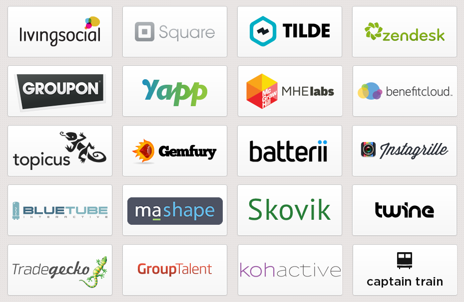

Introducción a
Ember.js
Manuel Cerón - ceronman@gmail.com
Contenido de la charla
- Acerca de mi
- Qué es Ember.js
- Qué es MVC
- Explorar con ejemplos
Acerca de mi
- Programador desde hace 15 años
- Aplicaciones de escritorio
- Backend con Python y C#
- Nuevo en el web front-end
Qué es Ember.js
- Relativamente nuevo (2011)
- Raices en SproutCore
- Aplicaciones web ambiciosas
Ember.js is focussed on the underlying architecture of JavaScript applications and looks to eliminate boiler plate code and make it easier to create MVC applications without complex code.
Lo que proveé Ember.js
- Modelo de clases
- Bases para usar MVC
- Data binding
- Aplicaciones web ambiciosas
- Código
Quienes usan Ember.js
Alternativas a Ember.js
MVC - Modelo - Vista - Controlador
MVC - Modelo - Vista - Controlador

Aprendiendo
Ember.js
con Ejemplos
Hola mundo!
window.App = Ember.Application.create({
version: "0.1"
});
<!doctype html>
<html>
<head>
<script src="js/libs/jquery-1.7.2.min.js"></script>
<script src="js/libs/handlebars-1.0.0.beta.6.js"></script>
<script src="js/libs/ember-1.0.pre.min.js"></script>
<script src="js/example.js"></script>
</head>
<body>
<script type="text/x-handlebars">
<h1>Hola Mundo version {{App.version}}</h1>
</script>
</body>
</html>
Propiedades
App.user = Ember.Object.create({
firstName: 'Guybrush',
lastName: 'Threepwood',
profession: 'Pirata',
fullName: function() {
return this.get('firstName') +
' ' + this.get('lastName');
}.property('firstName', 'lastName')
});
<h1>Hola</h1>
<p>Eres <strong>{{App.user.fullName}}</strong>,
eres un {{App.user.profession}}</p>